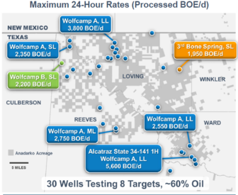
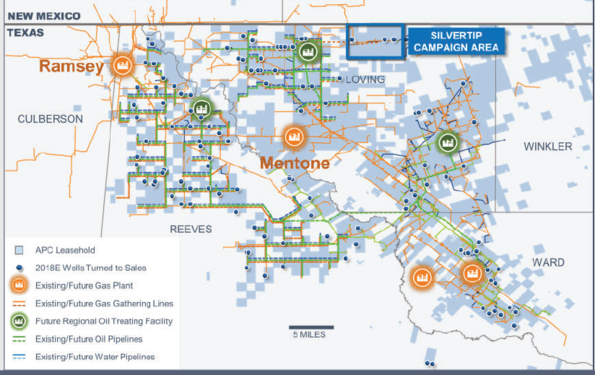
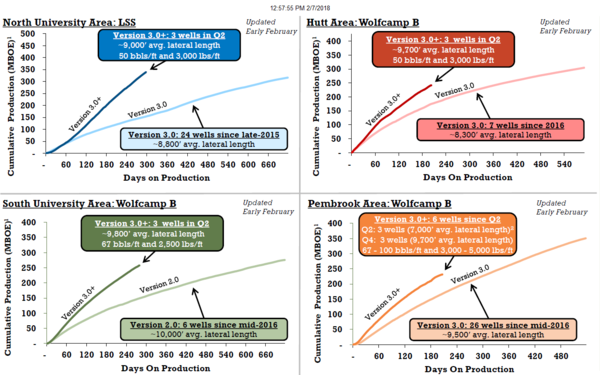
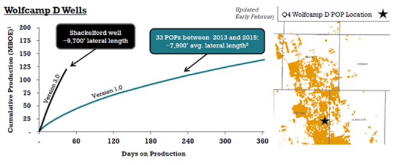
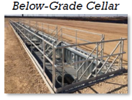

4Q'17 Conference Call Highlights
Service Companies
Halliburton
- Total company revenue was $5.9 billion, representing a 9% increase from 3Q’17.
- North American revenue was up ~7% sequentially. Improvement was driven by increased utilization and pricing throughout the United States.
- Highlighted select technology:
- Geometrix 4D Shaped Cutters - Improve cutting efficiency and increase control to reduce drilling costs.
- JetPulse - Provides high speed data transmission of drilling and formation evaluation measures.
- Marine Sentry - Device providing pressure control solutions by creating a seal around the drill string and tool joints for safer containment of fluids.
- BaraShale - Water-based fluid designed to maintain full salt saturation with reduced density, which should help prevent lost circulation and minimize disposal costs.
- Electromagnetic Pipe Xaminer - Allows operators to pinpoint casing defect and metal corrosion in up to five tubular strings within the well.
- Have seen cost inflation in sand and trucking. Price of sand has escalated over the last few months of 2017. However, increased sand supply from localized mines should reduce costs in 2018.
- Completions market remains tight and is currently sold out; will continue to push pricing throughout the year.
- Rig to frac spread ratio is ~2:1. During the oil price decline, the spread rose to as high as ~4:1.
- Industry horsepower is working harder, which is increasing pace of degradation on equipment.
- Believe price inflation could be higher than 15% in 2018.
Upstream Companies
Anadarko
- Onshore production averaged 391 Mboe/d, which was an increase of 9% from 4Q’16.
- Delaware Basin production increased 54% to average 77 Mboe/d (61% oil).
- Company estimates there are over 10,000 drilling locations and over 4 BBoe in net resource across it’s 589,000 gross (240,00 net) acre position.
- Wolfcamp A accounts for 3 BBoe of the total.
- Currently running 9 rigs and 7 frac crews in the Delaware.
Expect to PoP 160 wells and deliver YoY production growth of more than 50% in the Delaware. 
- Implemented extended flow back program on 30 wells across its acreage footprint with results exceeding 2017 Wolfcamp A type curve by 25%.
- Seeing increased gains on unconstrained flowback due to buildout of oil treating facilities.
- By YE18, Anadarko midstream and Western Gas plan to place into service an additional 400 MMcf/d of gas processing and 120 Mbo/d of oil treating capacity.
- Management believes infrastructure buildout is crucial to outperformance within the basin.

- Spent $400 million in “other onshore assets” outside of the company’s core acreage. No additional details were provided on where capital was deployed.
- Hedged ~50% of 2018 production.
Chevron
- Replaced 155% of reserves primarily driven by Permian, Gorgon and GoM.
- Fourth quarter production from the Permian was 205 Mboe/d.
- Operated 16 rigs and 6 frac fleets.
- Transacted more than ~60,000 acres in the Midland and Delaware Basins adding 600 XL laterals to inventory.
- Multiple deals expected to close in 2018.
- Using technology to better assess seismic attributes to control drill bits and improve precision of lateral landing.
- Increased number of stages and lowered perforated intervals.
- Around two-thirds of capital spend in the Permian is protected with contracts.
ConocoPhillips
- Estimate full-year production guidance of 1,215 Mboe/d and capex of $5.5 billion.
- 4Q’17 Lower 48 production averaged 236 Mboe/d.
- Increased dividend by ~7.5% and planned share buybacks by 33%.
- Company strategy unchanged with focus on free cash flow and funding the dividend.
- Acquired 245,000 net acres of unconventional exploration leases for $235 million in three different early-stage plays.
- Did not divulge further details as company is still coring up position.
- Acreage is being acquired at less than $1,000 per acre.
- Permian acreage transacting over $30,000/acre is not competitive in current portfolio.
ExxonMobil
- 2017 production averaged 3,985 Mboe/d, 2% down from 2016.
- Plan to spend $50 billion in the US over the next five years with a majority going in the Permian.
- Increasing rig count to 30 rigs in the Permian by YE2018.
- Recently began producing from its first Delaware 12,500’ lateral.
- Early results are in line with models.
- Continue to assess multi-zone potential across Delaware and Midland Basins.
Murphy
- 2018 production expected to be ~168 Mboe/d with associated capex of $1.06 billion.
- Permian CAPEX estimated to be ~$16.5 million.
- In process of testing both contiguous acreage positions in Dawson and Andrews Counties.
- Two wells are currently online and plan on drilling additional two wells in 2018.
- Two wells are currently online and plan on drilling additional two wells in 2018.
Pioneer
- Divesting Eagle Ford, South Texas, Raton and West Panhandle assets in 2018 to become Permian Basin pure player.
- Post divestitures, cash operating margins and corporate returns expected to be significantly higher.
- 2017 production averaged 207 Mboe/d, which was ~16% higher than 2016.
- Replaced 309% of reserves (314 MMboe) at an average F&D cost of $8.46 per BOE.
- PoP’d 64 horizontal wells during the fourth quarter, 8 wells utilized Version 3.0+ completions.
- Permian Basin 2018 forecast production expected to grow by 19%-24%.
- Oil production expected to grow by similar percentage.
- 2018 Capex is ~$2.9 billion with more than 90% towards D&C.
- Assumes 5% cost inflation.
- Vertical integration should alleviate impact of 10%-15% cost inflation forecasted across industry.
- Plan on operating 20 rigs and PoP 250-275 wells in 2018.
- 16 rigs in the northern portion.
- 4 rigs in the Wolfcamp JV area.
- Version 3.0+ results look encouraging based on early time data.
- Utilizing between 2,500-5,000 lbs/ft depending on area.
- Proppant loading is significantly higher than industry average of ~2,000 lbs/ft in the Midland Basin.
- IRRs averaging 65% assuming $55/Bbl and $3/Mcf.

- First Wolfcamp D with Version 3.0 completion PoP’d in Midland County has produced 120 Mboe/d (72% oil) in 45 days.
- Completing three additional wells with higher proppant loading in 2018.
- Company estimates Wolfcamp D prospective on ~450,000 gross acres.

- Appraisal wells mainly targeting Middle and Lower Spraberry on northern portion of acreage next year.
- 10 wells will test Jo Mill and Middle Spraberry.
- 9 wells will test Lower Spraberry
- Plan on drilling first Clearfork well in Midland County.
- Reducing 4-string casing design to ~50% of program from ~75% in 2H2017.
- Updated EURs and D&C costs for Wolfcamp A/B and Spraberry Intervals from third quarter.
- Wolfcamp B costs increased by $100k and EURs remained unchanged.
- Wolfcamp A costs increased by $500k and EURs increased by 100 Mboe.
- Spraberry costs and EURs remained unchanged.
| Formation | Lateral Length | Well Cost ($MM) | EUR (MMBOE) |
|---|---|---|---|
| Wolfcamp B | ~10,000’ | ~$8.9 | 1.7 |
| Wolfcamp A | ~9,500’ | ~$8.3 | 1.4 |
| Lower Spraberry | ~9,500’ | ~$7.5 | 1.1 |

- Permian infrastructure build out underway spending ~$300 million for SWD facilities and Below-Grade Cellars.
- Implementing Below-Cellars on 24-well pads which minimizes future surface acreage requirements and reduces full-cycle surface costs per well.
- Expect to reuse 15%-20% of produced water in 2018.
- Plan on saving around 20% on sand using local mines.
- Majority of sand composed of finer mesh sizes (100 and 40/70).
- In process of testing multiple pilot projects to ensure there is no degradation of well results.
- More than 85% of forecasted 2018 Permian oil production hedged.
- Hedging percentage considerably higher than peer average of ~45%. See the link (Permian Basin Hedging) for a review of hedging profiles from our peers.
- 2018 cash flow breakeven oil price is ~$58 based on all in horizontal cost structure of $19/Boe.
Shell
- Sticking to capital range between $25-$30 billion. through 2020.
- Hard ceiling even in higher price environment.
- Reduced debt by $8 billion dollars over the previous four quarters.
- Gearing stands at ~24.8%.
- Corporate strategy remains focused on increasing shareholder distributions.
- Awarded 9 blocks in the GoM through the Mexican open bidding process.
- Previously announced the Whale deep discovery (60% WI) which encountered more than 1,400’ of net oil bearing pay.
- Management would consider reducing growth in Permian if necessary.
- Reading through the lines, Shell might be open to asset divestitures in it’s unconventional assets given upcoming major project decisions at Vito in GoM, LNG Canada and its other long term assets.